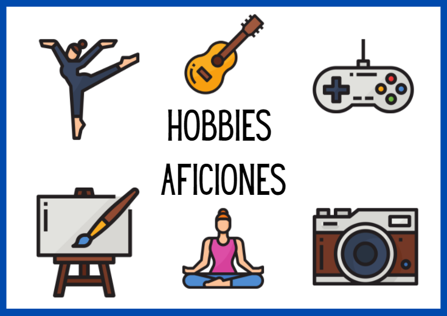

Guitarra
La guitarra es una de mis pasiones. Me encanta tocar música y aprender nuevas canciones.
Permíteme compartir contigo algunas de las cosas que más disfruto en la vida. Aquí encontrarás información sobre mis cuatro principales pasiones: la guitarra, los libros, los videojuegos y la informática. Cada una de estas actividades es una parte importante de mi vida, y me encantaría que las conozcas un poco mejor. ¡Disfruta de la lectura!
La guitarra es una de mis pasiones. Me encanta tocar música y aprender nuevas canciones.
Disfruto mucho de la lectura. Los libros me transportan a diferentes mundos y me ayudan a aprender.

Los videojuegos son una forma divertida de entretenimiento. Me encanta jugar y explorar nuevos mundos virtuales.
La informática es mi carrera y mi pasión. Me encanta programar y crear soluciones tecnológicas.

También me gusta mucho juntarme con más personas, o incluso yo mismo, y jugar a juegos de mesa. Aportan un enfoque diferente a los videojuegos y pueden dar lugar a situaciones muy divertidas.